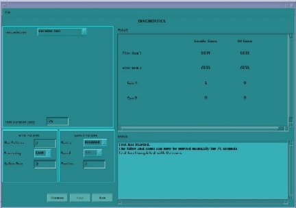

Watch for finger pinch hazards.
The test reduces the cam holding torque to allow the cams to be rotated by hand.
Cams are 2000 counts per rotation.
Filter is 1000 counts per rotation.
If the cam encoder fails the whole collimator assembly should be replaced.
Illustration 4: Collimator Functional Encoder Test GUI
